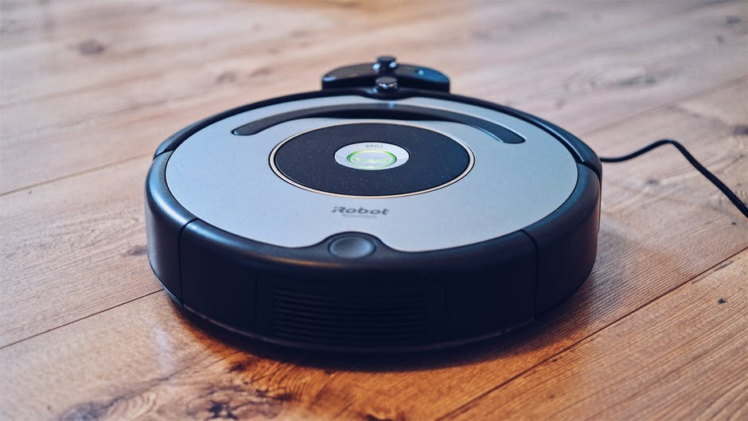

Blockchain
Our Blockchain Group is comprised of lawyers, computer scientists, cyber security experts, developers and academics and is well placed to advise on and assist with the technical and strategic implementation of blockchain solutions within your business, from proof of concept phase to final roll-out, while maintaining legal and regulatory compliance in what is a complex and rapidly evolving environment.
Robot hoover

We have created a reasonably priced robot vac that is certainly one to consider. Its simple, elegant design means it doesn't look out of place in a modern home and it’s easy to set up and use. Attach the sweeper brushes underneath the machine and charge using the docking station. Then switch on and use the remote to set up the cleaning mode you desire – pick from auto, scheduled, spot clean, edge clean, maximum clean or single room clean. The robot works by bounding along the floor until it detects a wall or piece of furniture, after which it will change direction.
5d cinema

5D cinema is the most popular dynamic movie theater which is the combination of 3D images, dynamic seats and environment effects produced by special 5D cinema equipment. The invention of 5D cinemas greatly enriches our life, for the attractive movies plus 5D cinema equipment bring us into a virtual reality world. In the VR world, the audience could feel dropping down, wind blowing,vibrating, etc. 5d technology simulates many special environment effects, such as rain, snow, bubble, fog, lightning,etc. Audience are totally involved in these scenes and feel 5d cinema experience through their vision, hearing, smelling and touching.